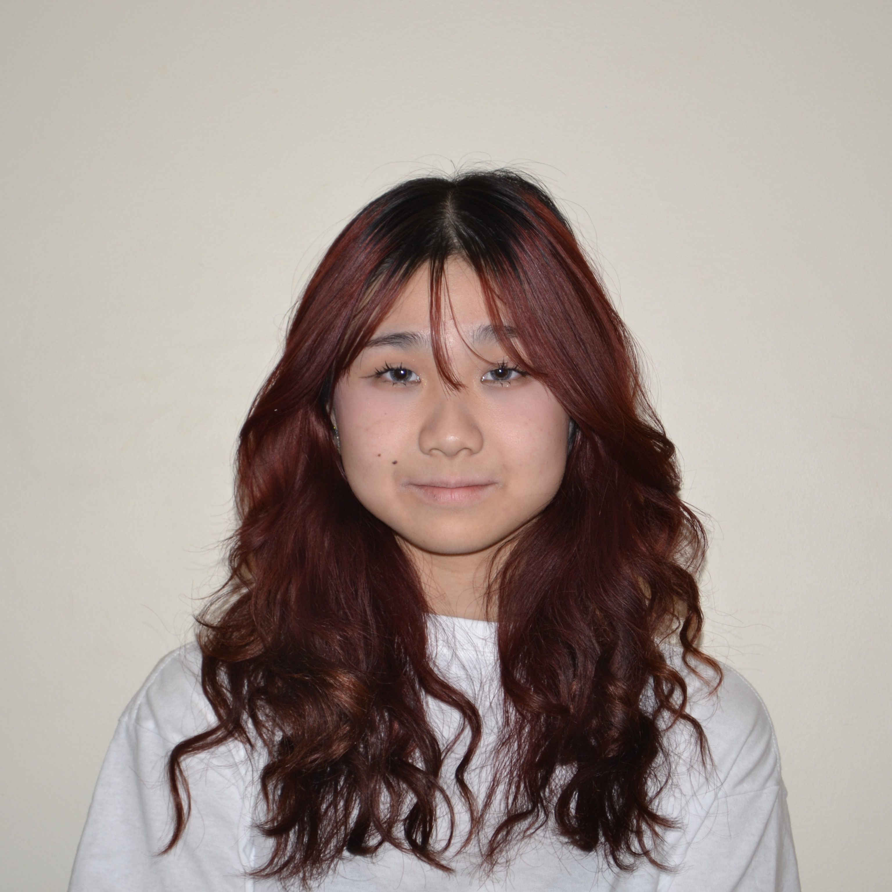

MEET THE TEAM
Adeline Chan
Co-Founder Email: adelinechan13@gmail.com Growing up, technology has advanced so drastically I often find it difficult to keep up with the new trends. Reminiscing about the past, I wanted to create an opportunity for youths to revisit their childhood and connect with seniors once again where they can learn about their knowledge and hear advice from their years of experience. I believe there is an importance to reach out to previous generations and bridge the gap as they are the key to creating a successful future.
Lynn Chen
Co-Founder Email: lynnjychen@gmail.com I joined The Morning Mission to not only reconnect myself with the elderly in my community but to tackle the issue of senior social isolation amplified by the pandemic. Whether through connective events, interactive activities, or loving cards, our team of youth all over the lower mainland works together to make change happen. The elderly play an essential role in our community, and this nonprofit highlights that. 
Zohal Aryn-Ciyear
Vice-President Email: zohalaryn.ciyear@gmail.com Following my volunteer work and various endeavors that focused on improving my community and school environment, I decided that it was time to be involved in an organization that focused on supporting our most vulnerable and disregarded generation. In a world that may be unfamiliar to them in our day and age, my priority is to reconnect the generations and to create many streams of community support towards seniors.
Eva Tan
Vice-President Email: evaztan10@gmail.com I joined The Morning Mission as a way to engage with seniors! I know that seniors weren’t always seniors and used to be in a similar position as I am right now, a teenager with teenager issues. I think they are some of the most experienced people and hope to learn from them.

Angel Hsieh
Secretary Email: Angelhsiehyy@gmail.com I Joined TMM because I wanted to learn about the past of older generations, and be able to share their stories to the world. After being reached out to by one of the co-founders I immediately wanted to join and be able to help bring the older and younger generation together. I believe that we have a lot to learn from each other. 
Menam Mahmood
HR Head Email: menam6421@gmail.com Connecting to our elders is so important, especially since they are older and wiser than us, and that’s why I decided to join TMM! As a young person in the community, I hope to connect with fellow seniors and encourage my fellow peers to as well! It would also help me understand things from a different perspective!
Hannah Wu
HR Member Email: hannahwu9866@gmail.com Growing up around my grandparents, The Morning Mission really caught my eye. Witnessing the elderly’s vibrant lives and rich experiences inspired me to join this non-profit organization. Here, students across Richmond can bridge generational gaps to understand and appreciate our older generation. Through The Morning Mission, I hope to promote empathy and a sense of community among our younger and older generations.
Serena Mok
HR Member Email: serenamok@gmail.com When I first found out about the Morning Mission, I was so touched to know there was a club in my area based on connecting more with seniors. I noticed their heartwarming events on instagram, as well as their overall goal of wanting to connect our generation to theirs. The club also reminded me of my grandma, and how I love and care for her, and want her to be more connected to our society, which I feel for all seniors. Resulting in why I chose to apply for the Morning Mission team.
Leelu Li
Marketing Member Email: bleeblu81@gmail.com I joined TMM because I love nonprofit organizations that allow youths and older generations to bond and form connections. These type of clubs allows us to become more connected with our community. .jpeg)
Alesha Chan
Marketing Member Email: aleshachan@gmail.com Hi my name is Alesha Chan, and I am part of the marketing team! I am passionate about design and collaborating with others during the process of creating projects. I joined the Morning Mission because I love the idea of uniting the youth and senior communities together in modern society!
Alicia Shing
Marketing Member email: aliciashing@gmail.com Being a student poses challenges for connecting beyond our own community. However, engaging in the morning mission holds a special place in my heart because as it not only allows me to connect with elders from diverse areas in Richmond but also offers a unique platform for meaningful interactions.
Irene Wang
Marketing Member Email: irenewang@gmail.com The reason why I want to join the morning mission is because I want to show my care towards the community and build strong bonds with the older generations. Being part of the marketing department, we create posts and reels to let the community know more about us and what we do. 
Colin Chen
Finance Director Email: colinchenemail@gmail.com I joined TMM because I realized the importance of having a strong relationship with older generations. After my grandparents all passed, I finally recognized that they had provided me with insight and guidance that I would not have been able to get due to my inexperience. I joined so that other youths would not miss out on these opportunities. 
Matthew Ji
Technology Director Email: jimatthew12@gmail.com I joined The Morning Mission because I believe that connecting to our elders is very important as they have gone through so much more than we have and are most likely able to give us advice on what to do next in our lives if we ever hit a roadblock. I personally was not privileged enough to talk to my grandparents a lot as they are very far away making communication very difficult.
Alyssa Chen
Secretary Email: alyssachen@gmail.com My role as Secretary is to organize information between departments, and take weekly meeting notes! I joined The Morning Mission as I’ve always felt it was important to connect with my grandparents, however it's been slightly difficult with them living in China. I hope to spread the importance of connecting with our elderly to our community, and bring smiles to their faces with the events we host. |
Scroll to top